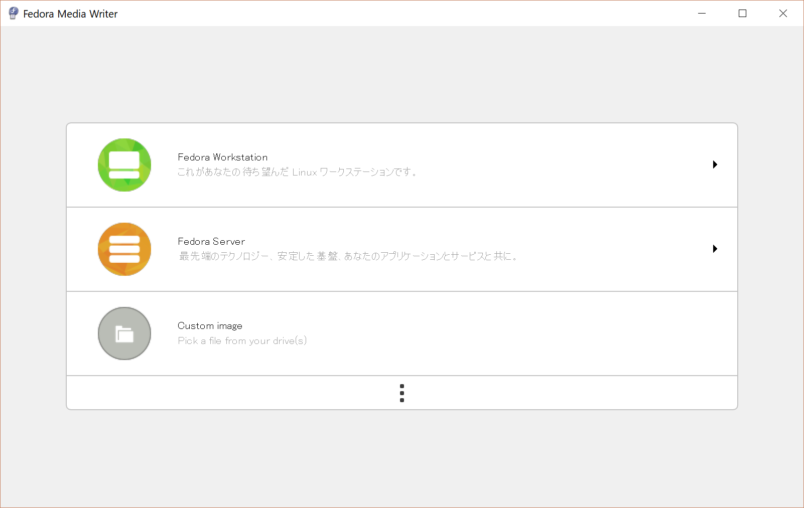
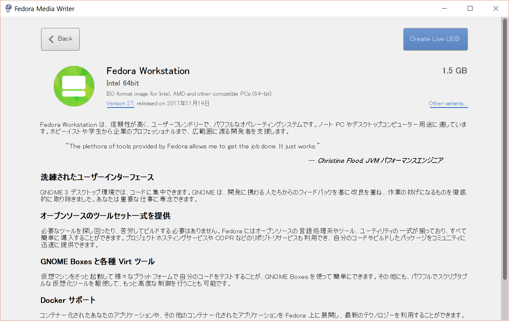
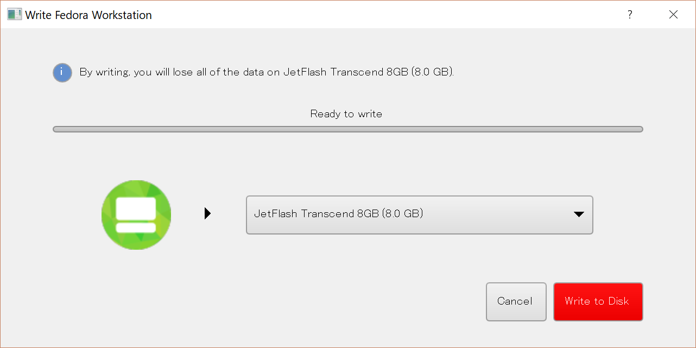
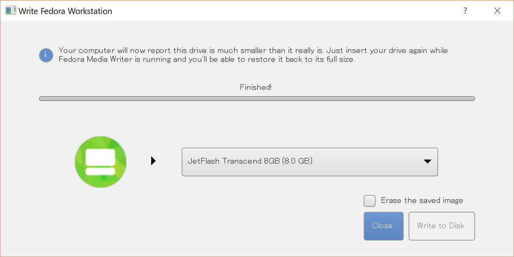
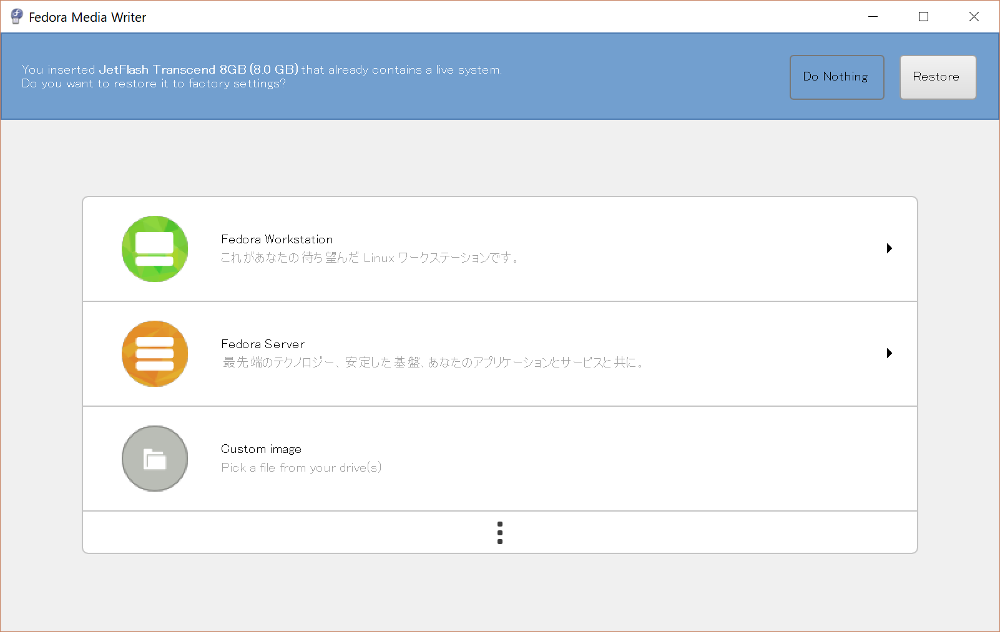
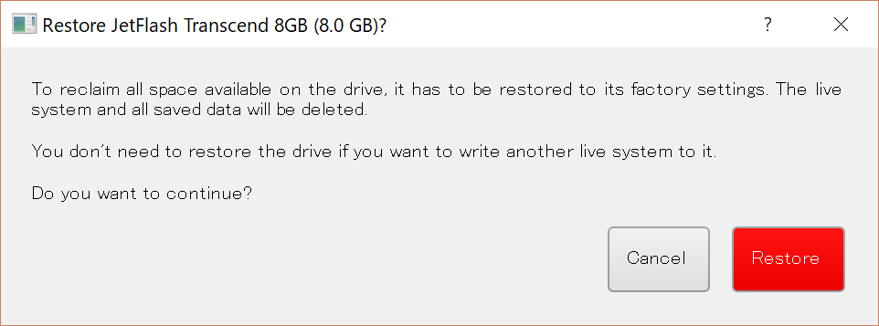
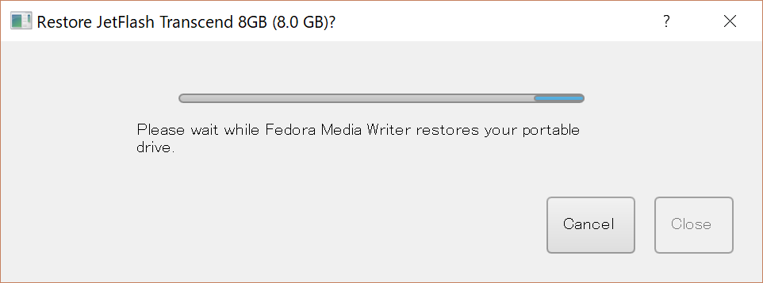
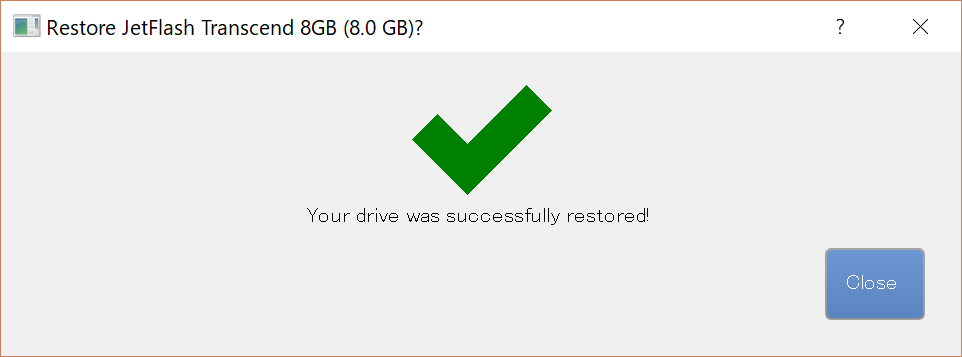

$Date: 2018-07-07 06:49:13 +0900 (2018/07/07 (土)) $
$Revision: 1347 $
USB メモリに Fedora 27 用のブータブルイメージを書き込む (Fedora Media Writer)
- Fedora Media Writerのソースコード
- USB メモリに Fedora 27 用のブータブルイメージを書き込む (Fedora Media Writer)
- USB メモリを他の用途に使う
Fedora Media Writerのソースコード
Fedora Media Writerのソースコードは
https://github.com/MartinBriza/MediaWriter
で公開されています。
USB メモリに Fedora 27 用のブータブルイメージを書き込む (Fedora Media Writer)
- Fedora 27 Workstation のダウンロードで Windows 用のツールをダウンロードする
- ダウンロードした FedoraMediaWriter-win32-4.1.0.exe (Mac の場合ファイル名が異なる)をダブルクリックしてインストールする
- USB メモリを挿す
- インストールした Fedora Media Writer を起動する
- Fedora Workstation を選ぶ
- Create Live USB を選ぶ
- Write To Disk を選ぶ




USB メモリを他の用途に使う
Fedora Media Writer で Fedora 用のイメージを書き込むと Windows からは通常のドライブとして認識しなくなります。
Fedora Media Writer を使うことで通常のドライブとして利用できます。
Windows の管理メニューからパーティションの操作をすることにより再利用可能ですが、Fedora Media Writer を使うと楽です。
- Fedora Media Writer を起動する
- USB メモリを抜き挿しする
- Restore ボタンを押す
- (別のダイアログの) Restore ボタンを押す
- 完了ダイアログが出る



